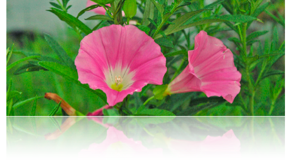
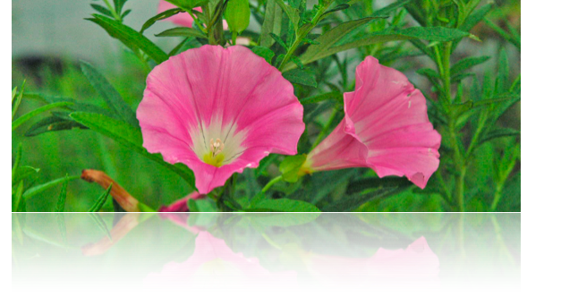

ケイト・ブレイディーの癒し方
人の一生は「さとり」への旅です。その過程で私たちの身体や たましや 心は 時々困難に遭遇 します。こういう時には 診断をつけて治療し 一日も早く「正常」に戻りたいと 誰もが思います。しかし 急ぎすぎると 問題の根源をつきとめる機会を逃し、そのために同じ問題があとから形を変えて現れることになりかねません。
「根源からの癒し」では 手っ取り早く症状の解消を図るのではなく、患者さん自身に内在する自己治療力を引き出して問題を解決しようとします。それによってはじめて根本的な癒しが可能となるのです。
治療方法
ここで使われる治療方法は最近２０年ほどの間に中国・日本・アメリカで開発されたものです。それは古代から伝わる東洋医学と新しいバーバラ・ブレナン博士による「癒しの科学」の両者を合わせたやり方です。
東洋医学の深い知恵から私達は森羅万象の循環と陰陽のバランスを学びました。それらを通して内的・外的環境のバランスを図り、食事や生活習慣を調節することができます。東洋医学の施術 により 内的なエネルギー「気」を解放し、痛みをやわらげ 元気をつける事ができます。
バーバラ・ブレナンによる「癒しの科学」から 私達は複雑なHuman Energy Field (HEF)-- 体内エネレギー分布ーーを活用する事を学びました。このからだを取り巻くHEFには自己調節力があり、それぞれのレベルに応じた適切な方法を用いてこれを生かすことができます。また この方式を使って 私たちが痛みや恐怖感を和らげより深いレベルの悟
りを達成するにはどうすればよいかを学ぶことができます。
ケイト・ブレイディーはTai Hsaun Foundationで鍼灸術と東洋医学を学び、全米東洋医学協会から鍼灸と漢方薬の免状を取得しています。また、彼女はエネルギー医学と自己変革の世界的権威であるBarbara Brennan School of Healingで4年間のコースを修了し、その他にもアロマセラピー、気候、霊気、東洋ハリの資格を持ち、長年に渡ってヨガを実践しています。
連絡先：
０７５−７０３−２２８７
スピリット・ゲート・ヒリーング
京都市 左京区
岩倉 西河原町 ３６４
コンチネンタル ヒロ ４０２号